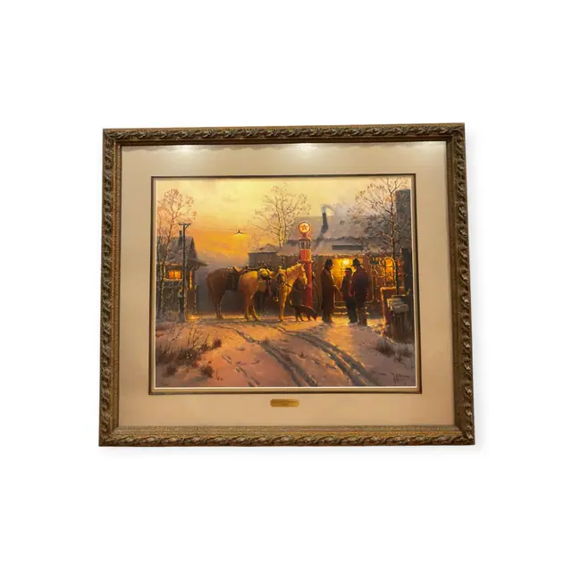
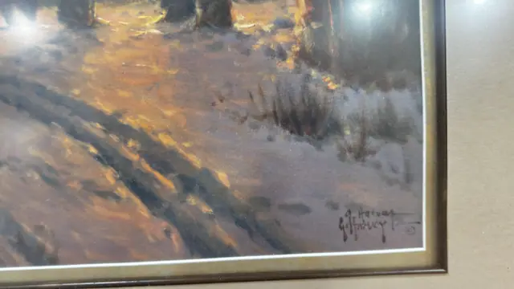
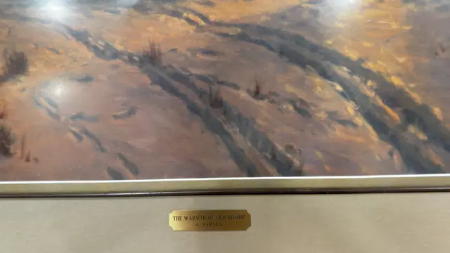
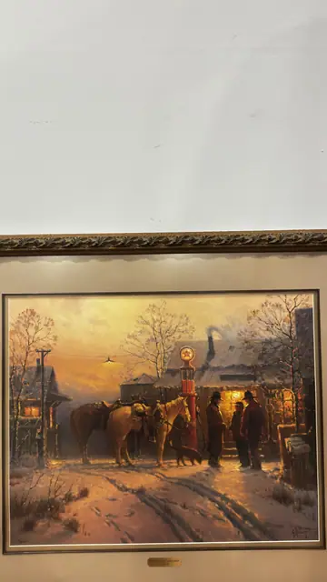
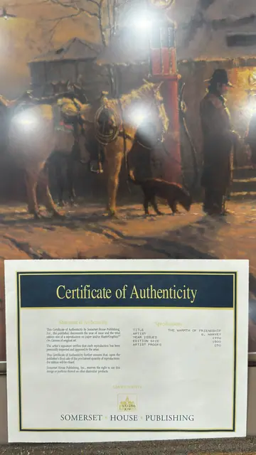
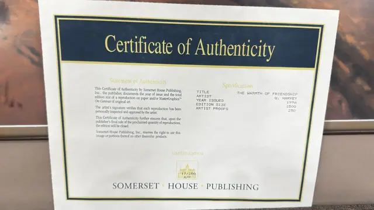

Paintings & Prints
G. Harvey The Warmth of Friendship Print, Numbered Edition, Framed, 1996
G. HARVEY · issued 1996
Price Upon Request






About the Item
G. HARVEY. A warm-toned winter twilight: a sorrel and a chestnut horse stand saddled at a hitching rail while two men in long coats and hats talk beside a slender red gas pump with a lit globe. Behind them a clapboard store glows amber through its windows, smoke rises from a stone chimney, and a bare-branched tree and telegraph pole break the pale gold sky. Wheel ruts and hoof tracks cut through the blue-shadowed snow in the foreground; the palette is amber, ochre and warm brown against cool violet-blue snow shadow. Medium: offset lithograph reproduction on paper. Signed lower right of the image; a printed signature with a hand-applied signature and copyright symbol below it, reading "G. Harvey". Edition: Year issued 1996; edition size 1500, artist proofs 250; foil seal on the certificate reads 17/250 A/P. Accompanied by a certificate: Publisher's Certificate of Authenticity for a limited-edition reproduction, 1996, edition 1500 plus 250 artist proofs, with a gold seal numbered 17/250 A/P. Inscribed on the reverse or mount: THE WARMTH OF FRIENDSHIP / G. HARVEY , engraved brass plaque on the frame; G. Harvey (twice at lower right of the image, one within the printed image and one applied below it, with a small copyright symbol); Certificate of Authenticity , Statement of Authenticity: This Certificate of Authenticity by Somerset House Publishing, Inc., the publisher, documents the year of issue and the total edition size of a reproduction on paper and/or MasterGraphics On Canvas of original art. The artist's signature verifies that each reproduction has been personally inspected and approved by the artist. This Certificate of Authenticity further ensures that, upon the publisher's final sale of the proclaimed quantity of reproductions, the edition will be closed. Somerset House Publishing, Inc., reserves the right to use this image or portions thereof on other dissimilar products.; Specifications , TITLE: THE WARMTH OF FRIENDSHIP / ARTIST: G. HARVEY / YEAR ISSUED: 1996 / EDITION SIZE: 1500 / ARTIST PROOFS: 250. Condition: No visible damage; surface clean under glass with lamp reflections. Frame ornament intact with light rubbing.
Details
- Creator:
- G. HARVEY
- Creation Year:
- issued 1996
- Dimensions:
- Height: 33.0 in (83.82 cm)
Width: 38.25 in (97.16 cm)
outside of frame - Medium:
- offset lithograph reproduction on paper
- Edition:
- Year issued 1996; edition size 1500, artist proofs 250; foil seal on the certificate reads 17/250 A/P
- Period:
- 20Th
- Condition:
- Offered in the condition shown in the photographs.
- Reference Number:
- VO-220
- Documentation:
- Publisher's Certificate of Authenticity for a limited-edition reproduction, 1996, edition 1500 plus 250 artist proofs, with a gold seal numbered 17/250 A/P.
- Gallery Location:
- THE WARMTH OF FRIENDSHIP / G. HARVEY , engraved brass plaque on the frame; G. Harvey (twice at lower right of the image, one within the printed image and one applied below it, with a small copyright symbol); Certificate of Authenticity , Statement of Authenticity: This Certificate of Authenticity by Somerset House Publishing, Inc., the publisher, documents the year of issue and the total edition size of a reproduction on paper and/or MasterGraphics On Canvas of original art. The artist's signature verifies that each reproduction has been personally inspected and approved by the artist. This Certificate of Authenticity further ensures that, upon the publisher's final sale of the proclaimed quantity of reproductions, the edition will be closed. Somerset House Publishing, Inc., reserves the right to use this image or portions thereof on other dissimilar products.